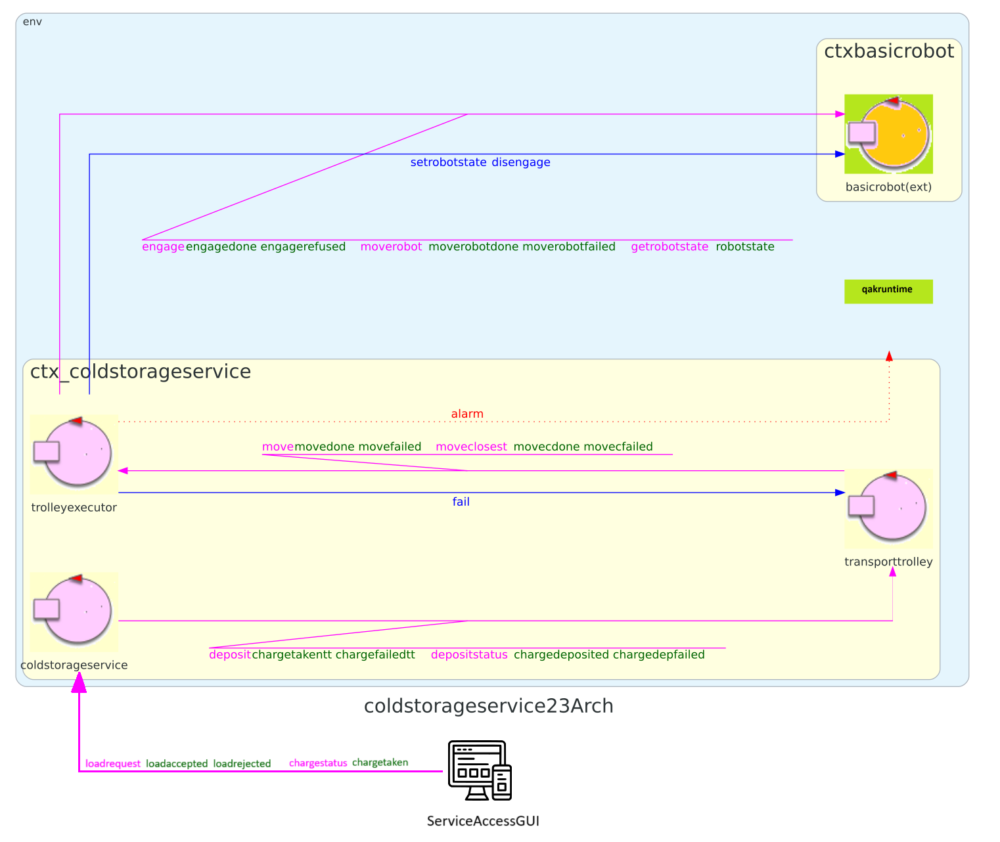

Introduction
All'interno dello Sprint1 è stato analizzato il core-business dell'applicazione, ovvero le funzionalità offerte dal ColdStorageService, usando la ServiceAccessGUI come prompt per utilizzare i servizi. In questa fase, ci siamo occupati della logica del ColdStorageService usando un contesto semplificativo in cui vi fosse un'interazione per volta.
In questo Sprint gestiremo invece la presenza di più utilizzatori simultanei, analizzando quindi il concetto di ticket e costruendo la versione finale della ServiceAccessGUI.
Requirements
Descrizione requirements a questa pagina
- Definire cos'è il ticket e come gestirlo
- Implementare la ServiceAccessGUI con il concetto di più utilizzatori contemporanei in un sistema distribuito
Visto quanto realizzato nell'analisi della ServiceAccessGUI relativa allo Sprint1, abbiamo già pronta l'applicazione web di partenza, realizzata con il framework SpringBoot.
Requirement analysis
Si riporta il modello risultante dall'analisi in Sprint1, sul quale si baserà la seguente analisi.

Inoltre, viene riportato nei seguenti documenti la versione del TemaFinale23 analizzata contestualmente a questo Sprint, ed in particolare ai due macro-argomenti:
ServiceAccessGUI
La ServiceAccessGUI è l'interfaccia grafica a disposizione dell'utente per accedere ai servizi forniti dal ColdStorageService.
Interazioni
Di seguito, vengono riportate le interazioni presenti e già implementate nello Sprint1.
Abbiamo tre attori:
- FridgeTruck: utente umano
- ServiceAccessGUI: interfaccia grafica (applicazione web realizzata relativamente allo Sprint1)
- coldstorageservice: attore qak
| Mittente | Destinatario | Tipologia interazione/messaggio | Eventuale messaggio | Descrizione |
|---|---|---|---|---|
| FridgeTruck | ServiceAccessGUI | Interazione umana | Inserimento quantitativo di cibo da depositare in chilogrammi e innesco richiesta di deposito. | |
| ServiceAccessGUI | coldstorageservice | Request | storerequest : storerequest(FW) | Richiesta di storage di FW chili di cibo. |
| coldstorageservice | ServiceAccessGUI | Reply | loadaccepted : loadaccepted() | La richiesta di deposito è stata accettata. |
| coldstorageservice | ServiceAccessGUI | Reply | loadrejected : loadrejected() | La richiesta è stata rifiutata. |
| FridgeTruck | ServiceAccessGUI | Interazione umana | Innesco richiesta di stato del carico. | |
| ServiceAccessGUI | coldstorageservice | Request | chargestatus : chargestatus() | Viene richiesto lo stato del carico depositato. |
| coldstorageservice | ServiceAccessGUI | Reply | chargetaken : chargetaken() | Il deposito è stato preso in carico dal transport trolley, il camion deve spostarsi da INDOOR. |
| coldstorageservice | ServiceAccessGUI | Reply | chargefailed : chargefailed() | Ci sono stati problemi durante la presa in carico del deposito. |
Ora, come visto nei requisiti, a seguito di una richiesta accettata (loadaccepted), il ColdStorageService deve fornire il ticket number.
Di conseguenza, dovrà essere presente nella SAG un campo per l'inserimento del ticket, da cui poi innescare la richiesta di deposito verso il coldstorageservice, specificando appunto il ticket number.
Inoltre, si aggiunge il requisito di visualizzare il peso corrente del materiale immagazzinato nella Cold Room.
L'applicazione deve mostrare visualizzazioni separate per ogni utente (operiamo in un contesto distribuito). Quindi, un'utente dovrà visualizzare l'accettazione (o rifiuto) della richiesta e l'eventuale presa in carico solo relativamente alla sua richiesta di deposito.
Ticket
| Termine | Descrizione |
|---|---|
| TICKETTIME | Quantità di secondi che esprime la durata della validità di un ticket. |
| Ticket | Rappresenta una prenotazione da parte dell'operatore di un camion refrigerato che identifica univocamente una azione di deposito in attesa di charge taken, è identificato da un numero univoco. |
Il ticket è quindi l'elemento che il servizio ColdStorageService dovrà inizialmente fornire all'utilizzatore, per poi controllarne la validità in fase di inserimento.
Parlando con il committente si è scoperto non essere necessario che il "numero" del ticket sia propriamente un numero: intendiamolo quindi come un codice.
Problem analysis
ServiceAccessGUI
Contesto distribuito
La ServiceAccessGUI dovrà notificare l'utente della presa in carico del proprio deposito. La separazione delle risposte in base alle varie istanze di SAG presenti è già stata realizzata grazie alla semantica request-reply definita in precedenza.
Quindi, non abbiamo problemi di memorizzazione degli indirizzi a cui inviare i messaggi.
Ticket
Dall'analisi dei requisiti vediamo che, oltre al codice, un'altro elemento inerente alla gestione del ticket è il TICKETTIME.
Dobbiamo pensare quindi come gestire la scadenza del ticket.
Validità temporale del ticket
Trattiamo il tempo di validità del ticket come un parametro configurabile alla definizione del ColdStorageService; quindi ogni ticket all'interno della stessa istanza del servizio avrà la stessa durata temporale di validità.
Sappiamo poi che è il ColdStorageService a controllare la conformità del ticket (correttezza del codice e validità temporale).
Decidiamo quindi di utilizzare la data di emissione come attributo del ticket, così che il CSS possa controllarne la validità calcolando il tempo attuale meno quello di emissione e vedere se è maggiore o meno del TICKETTIME.
KEY-POINT: il TICKETTIME è un parametro configurabile del servizio ColdStorageService, non del ticket in sè.
KEY-POINT: ogni ticket avrà associata la propria data di emissione.
Codice univoco
Per quanto riguarda il codice abbiamo bisogno che sia univoco, così da non avere collisioni tra diverse richieste di deposito.
Dobbiamo quindi pensare a:
- che tipo di codice deve essere
- come generarlo e garantire che non collida con altri
- come memorizzarlo ed effettuare il controllo di validità in fase di inserimento dalla SAG
Codice alfanumerico
Il fatto di usaro un numero vero e proprio come codice sarebbe un limite molto forte, in quanto lo spazio di valori non sarebbe così ampio da garantire sicurezza (a meno di non usare un numero di cifre molto elevato).
Abbiamo optato per l'utilizzo di un codice alfanumerico di 8 caratteri, in modo da ottenere un buon trade-off tra costi di computazione e possibilità di collisione: abbiamo infatti uno spazio di valori possibili di più di 6500 miliardi.
KEY-POINT: il "ticket number" sarà un codice alfanumerico di 8 caratteri.
Generazione
La generazione del codice deve avere i requisiti di univocità e di imprevedibilità. Nonostante non si stiano trattando dati sensibili è bene che per utente malevolo sia computazionalmente impossibile prevedere quale sia il prossimo codice che verrà generato; se così non fosse, l'utente potrebbe calcolare il codice ed immetterlo nella SAG prima che l'utente originale arrivi alla INDOOR, depositando al posto suo.
Conseguentemente a questi requisiti, dovremo usare uno Pseudo Random Number Generator crittograficamente sicuro (la sua implementazione sarà meglio trattata in fase di progettazione).
KEY-POINT (Requisito di sicurezza): per la generazione del codice del ticket verrà usato un PRNG crittograficamente sicuro.
Memorizzazione e controllo
Per questioni di sicurezza il ticket deve essere memorizzato in modo tale da non poter essere scoperto o dedotto dall'esterno. Per ottenere questo risultato possiamo usare una funzione hash: in questo modo memorizzeremo solamente l'impronta generata dalla suddetta funzione, risparmiando molto in termini di memoria occupata.
Per effettuare il controllo, al momento dell'inserimento del codice il CSS ricalcolerà l'impronta tramite la stessa funzione hash per vedere se trova corrispondenza.
Funzione hash
Anche qui necessitiamo di una funzione crittograficamente sicura, che sia efficiente, che non permetta il calcolo a ritroso e che soprattutto sia resistente alle collisioni (l'implementazione verrà discussa in fase di progettazione).
Associazione ticket-richiesta
Quando il CSS emette il ticket deve esserci un'associazione 1 ad 1 con la richiesta di deposito, così che, quando l'utente inserisce il codice, sia possibile risalire alla richiesta e alla quantità di kg FW da depositare.
In questo modo non sarà necessario che la SAG invii due volte l'informazione relativa al quantità di cibo da depositare.
KEY-POINT: il CSS dovrà memorizzare l'associazione fra una determinata richiesta di deposito (con il relativo quantitativo FW) e il ticket emesso in risposta ad essa.
Test plans
Per quanto riguarda i piani di test da implementare, rimanendo ad un livello logico, bisogna effettuare i seguenti controlli:
- ogni istanza deve gestire la visualizzazione in base agli aggiornamenti relativi solo ed esclusivamene alla sua sessione. In particolare:
- ad ogni richiesta di deposito deve arrivare la risposta (accettata, rifiutata o un errore come il timeout)
- in caso di richiesta accettata deve essere essere visualizzato il messaggio di presa in carico
- la pagina web non deve permettere di effettuare due richieste all'interno della stessa sessione/istanza
- se arrivano due richieste di deposito con lo stesso identificativo, la seconda in ordine temporale deve essere rifiutata
- non devono essere generati dal CSS dei codici di ticket uguali la cui validità temporale possa sovrapporsi
Project
Testing
Deployment
Maintenance
Riccardo Barbieri - riccardo.barbieri11@studio.unibo.it

Leonardo Ruberto - leonardo.ruberto@studio.unibo.it